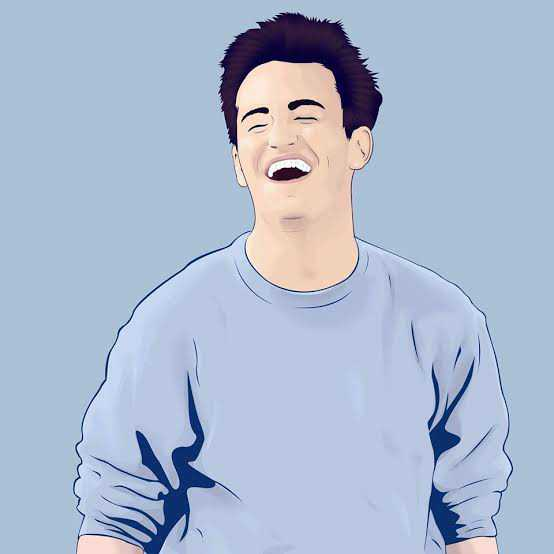

Main cast
Here are the one's WHOM/WHOSE sometimes WHO complete the show.


Information
Allow me to introduce the cast of F.R.I.E.N.D.S.
I'll start with Rachel Karen Green
She like Ross, She hate Ross!
Rich girl pero nice turn of event happen kaya she became independent with the help syempre nila mon, chan, joey, pheobe and ross(i know! pwede namang friends lang inisa-isa ko pa well...don't care need ko mapahaba description). So ending nang character ni Rachel ang Chissmiss eh finaaly She like Ross at yun they did ended up being together tapos nasundan pa si Emma na first born nila yehet.to Rachel= ROSS GELLER(let's leave the Dr.)
haiii...
So aside from chissmiss ko kay Rach eh syempre may ibang chika din ako kay Ross. At first i did get disapointed sa character ni Ross pero since nakailang panood naman na ako sa series nato i realize na some of it eh talagang si rachel ang 2020 nang show na to. Get's mo na yon, UNAGI!.How you doin JOEY TRIBIANI
JOEY DOESN'T SHARE FOOD
Joey Joey Joe the biggest teddy bear.The most Manyak but the most loyal character on friends. FRIENDS first at any matter aside FOODs syempre. He's cute specially when he likes somebody lalo na nang nagkacrush sya kay Rachel,Hay nako haba kasi ng buhok ni rachel eh.I know! MONICA GELLER

Seven!Seven!Seven!Seven!
Uhmm.. THE MOTHER. Clean freak oooppss hahaha sweet sweet biruin mo yon hinahayaan nya lang lagi makikain sa bahay nya yung mga kaibigan nya and btw what i mean by lagi is araw araw oh diba kung dito sa pinas yung kung ano ano na sasabihin like "huy may patago ka ba ha?" hahaha well theyre bond talga is really one of a kind.smelly cat SmeLLY cat PHOEBE BUFFAY

I don't even have a pla...
Also known as Princess Consuela Bannahamock. Had a twin sister that treats each other as stranger. halos same lang kay Ross pagdating sa relationship but di naman masysdong hinighlight throughout sa series so di mo masyadong feel plus the fact pa na weird si phoebe but i love her hahaha who doesn't naman diba.Could i be Anymore last CHANDLER BING
blah blah blaqqkkk.....
My favorite character BING!!! funny jokes, Money, sweet towards Monica, Cute and more pa hahaha syempre more favorite eh haha di naman masyadong halata. The best roommate to Joey specially sa pag bayad ng bill at sa iba pa hahaha. blah blah blah blah blah blah blah blah blah blah blah blah blah blah blah blah blah blah blah.